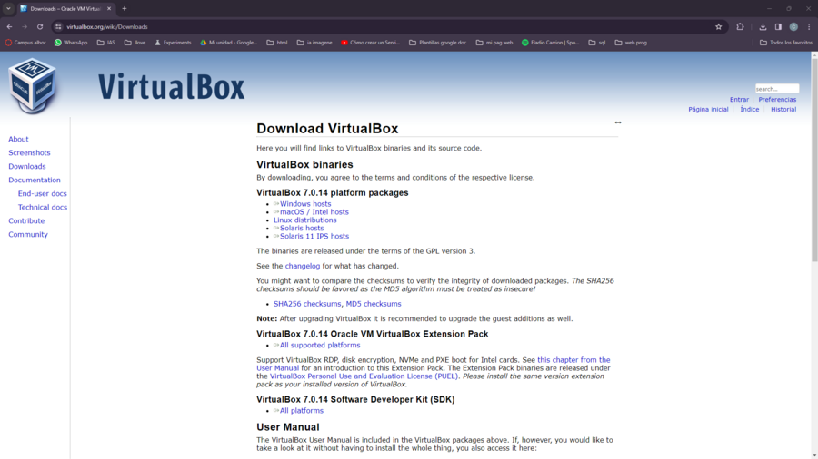

Descarga e instalacion de VirtualBox
Lo primero sera acceder a la pagina oficial de VirtualBox para descargar el programa en su ultima version. La direccion para descargarlo es la siguiente: https://www.virtualbox.org/wiki/Downloads
En este pagina le damos a al sistema operativo que tengamos en nuestro dispositvo en este caso windows y se empezara a descargar la version mas reciente del programa VirtualBox. Una vez descargado en descargas aparecera el siguiente archivo ".exe" para instalar el programa.
Le aparecera una ventana de instalacion solo tendras que seguir los siguientes pasos y tendra el programa instalado:
-
Lo primero es darle a next en la ventana que aparece despues de
abrir el archivo ".exe".
-
Luego se le da a next.
-
Lo siguiente es clickear en yes.
-
Luego se le da a yes otra vez.
-
Despues se le da a install y esperamos unos minutos a que se
instale.
-
Por ultimo finish y ya estaria VBOX instalado en su PC
correctamente.